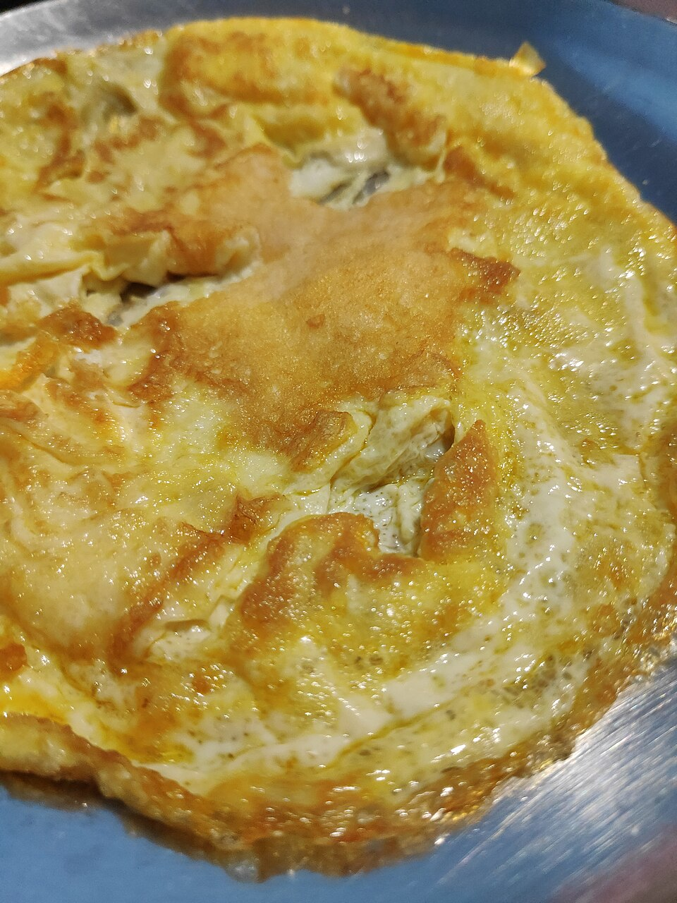

Cheese Omelette
by
topfgucker

"Omelette"
by
Gaurav Dhwaj Khadka
is licensed under
CC BY-SA 4.0
Description
This cheese omelette is great for breakfast. My husband loves omelettes and nothing makes him happier. When cooking an omelette, it's important that you keep the temperature on the low side, as you don't want it to turn brown.
Ingredients
- 3 large eggs
- 1 tablespoon milk, or as needed
- Salt, to taste
- Ground white pepper, to taste
- 2 tablespoons butter
- 1/4 cup shredded cheese
Directions
-
Whisk eggs in a bowl; add milk and season with salt and white pepper. Whisk until egg mixture is foamy, 2 to 3 minutes.
-
Melt butter in a small, nonstick skillet over medium-low heat. Pour in egg mixture and swirl the skillet, so the bottom is evenly covered with egg. Cook until egg starts to set, about 1 minute. Lift edges with a spatula and tilt the skillet so uncooked egg can flow towards the bottom of the skillet to set. Repeat until no visible liquid egg remains.
-
Carefully flip omelette; cook until warmed through, 30 seconds to 1 minute. Sprinkle cheese down the middle of omelette; fold in half. Cook until cheese is melted, about 20 seconds. Slide omelette onto a plate.
Home